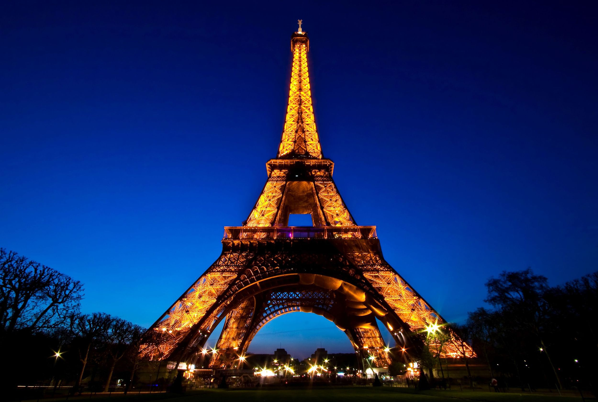

Paris, França
A Torre Eiffel é um dos ícones mais reconhecíveis do mundo, situada no coração de Paris.

Roma, Itália
O Coliseu é uma das antigas maravilhas do mundo, testemunho da grandiosidade da Roma Antiga.

Santorini, Grécia
As belas vistas de Santorini e as famosas casas brancas atraem turistas de todo o mundo.